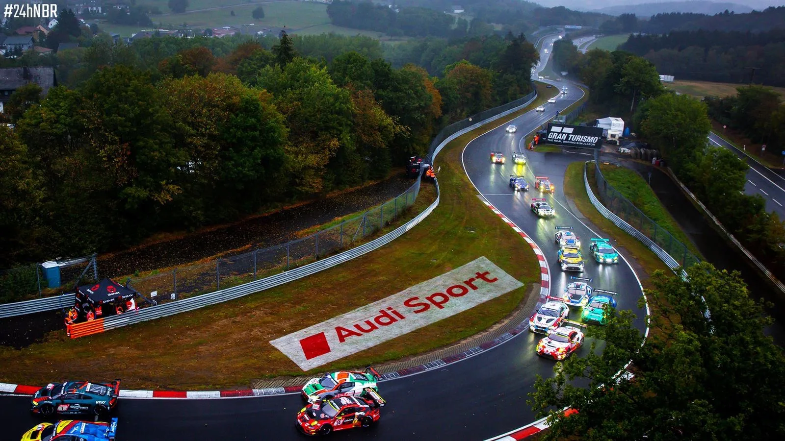
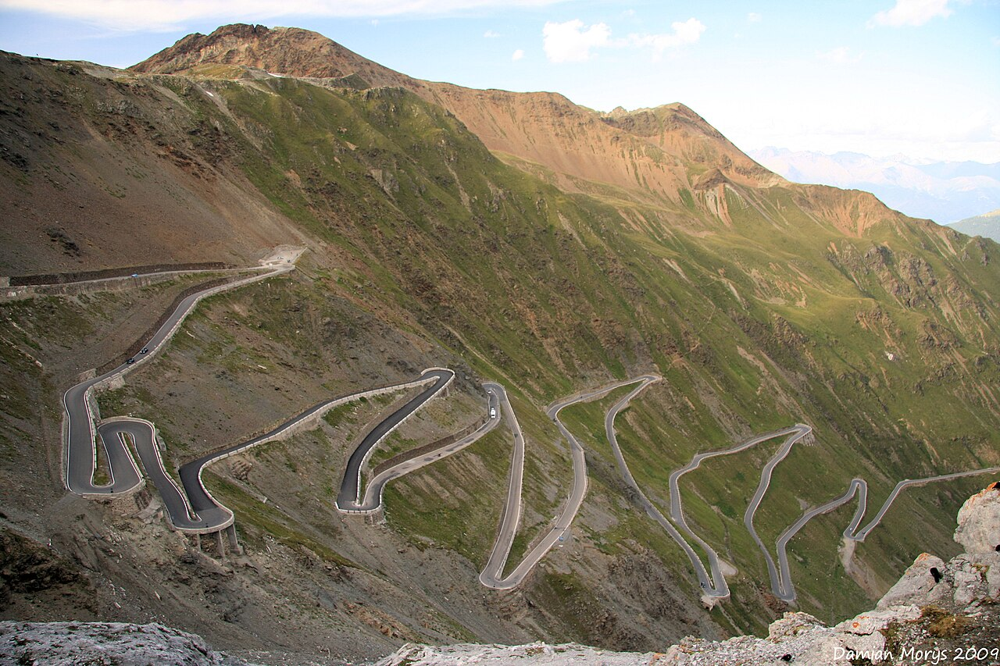

Нюрбургринг, Германия
Легендарная «Северная петля» — 20 км адреналина. Пройти её на своей машине — мечта любого автолюбителя. Я это сделал!
Трассы, музеи и дороги, которые оставили след в моей памяти.

Легендарная «Северная петля» — 20 км адреналина. Пройти её на своей машине — мечта любого автолюбителя. Я это сделал!

10 этажей истории автомобилестроения. От первого Benz 1886 года до современных электрокаров. Must visit!

48 поворотов на подъёме — рай для водителя. Лучшая дорога в моей жизни: серпантин, виды, чистый воздух.